Физика · 7 класс · 7 ноября
Средняя скорость.
Инерция и масса
- средняя скорость: весь путь на всё время
- самостоятельная работа — 20 минут
- опыты Галилея и явление инерции
- взаимодействие тел, инертность, масса
- заглянем вперёд: плотность
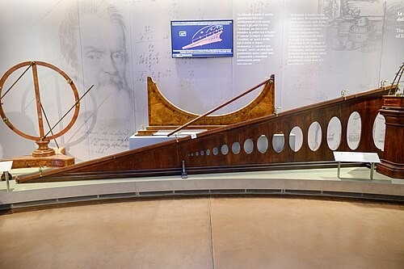
Урок 1: средняя скорость + задачи 1–6, в конце — СР 20 мин (2 варианта). Урок 2: инерция → взаимодействие → инертность → масса; плотность — задел на следующий урок. Клавиши: → дальше (сначала открывается подсказка, потом решение), P — перо, B — чистая доска, N — эти заметки.
Урок 1 · Разминка
Вспомним: скорость и графики
1
Переведите 54 км/ч в м/с. 54:3,6=15 м/с
2
Какой путь пройдёт самокат за 1 мин при скорости 4 м/с? s=4⋅60=240 м
3
Два графика пути из начала координат. Чей график круче — у того скорость… больше
4
Как по графику скорости найти путь? путь = площадь под графиком
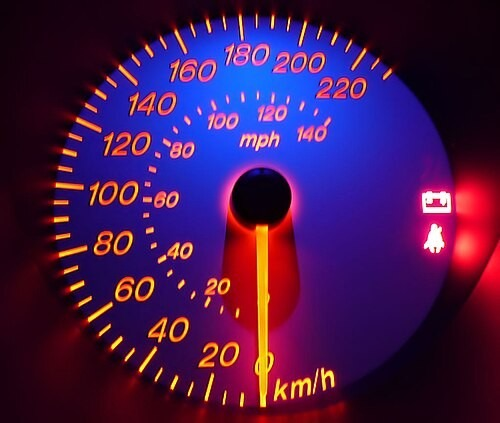
Спидометр
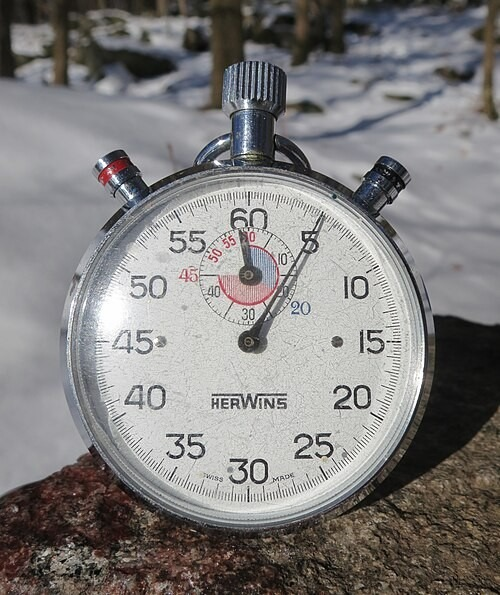
Механический секундомер
Ответы открываются по клику. 54 км/ч = 15 м/с; s = vt = 4·60 = 240 м; круче — быстрее; путь — площадь под графиком скорости.
Урок 1 · Теория
Равномерное и неравномерное движение
Равномерное движениеТело за любые равные промежутки времени проходит равные пути. Скорость не меняется.
Неравномерное движениеТело за равные промежутки времени проходит разные пути: разгоняется, тормозит, останавливается.
Автобус в городе: разгон — едет — тормозит — остановка. Какая у него скорость? Разная! Поэтому говорят о средней скорости.
Эскалатор — почти равномерно
Старт гонки — неравномерно: разгон
Спросить: бывает ли в жизни строго равномерное движение? (почти нет: эскалатор, поезд на перегоне — приближённо).
Урок 1 · Теория
Средняя скорость
Анимация: 90 км за 1 ч, затем 60 км за 2 ч
ОпределениеСредняя скорость неравномерного движения равна отношению всего пройденного пути ко всему времени движения (вместе с остановками).
vср=tвсёsвесь
Внимание!
Средняя скорость — не среднее арифметическое скоростей: (90+30):2=60 км/ч — неверно.Анимация: 90 км за 1 ч, потом 60 км за 2 ч. Всего 150 км за 3 ч — 50 км/ч, а не 60. В среднюю скорость входят и остановки. Среднее арифметическое подходит, только если время на участках одинаковое (задача 4★).
Урок 1 · Как решать
Алгоритм: средняя скорость за 3 шага
1. Найти весь путь: s=s1+s2+… (на каждом участке s=vt, если путь не дан).
2. Найти всё время: t=t1+t2+… — вместе с остановками.
3. Разделить: vср=ts. Проверить единицы!
Проверка здравым смыслом
Средняя скорость всегда между самой маленькой и самой большой скоростью на участках.Урок 1 · Задачи
Задача 1
1
Марафонец пробежал дистанцию около 42 км за 3 ч 30 мин. Найдите его среднюю скорость в км/ч и в м/с.
Подсказка: 3 ч 30 мин =3,5 ч
Дано:
s=42 км
t=3 ч 30 мин =3,5 ч
Найти:
vср — ?
Решение:
vср=ts
vср=3,5 ч42 км=12 чкм
12 км/ч:3,6≈3,3 м/с
Лучшие бегуны мира пробегают марафон чуть больше чем за 2 ч!
Ответ: vср=12 км/ч≈3,3 м/с
Урок 1 · Задачи
Задача 2
2
Ученик шёл до остановки 1 км за 15 мин, 5 мин ждал автобус и 10 мин ехал 9 км до школы. Найдите среднюю скорость на всём пути в км/ч.
Подсказка: всё время — вместе с ожиданием автобуса
Дано:
s1=1 км, t1=15 мин
t2=5 мин (ждал)
s3=9 км, t3=10 мин
Найти:
vср — ?
Решение:
s=1 км+9 км=10 км
t=15+5+10=30 мин=0,5 ч
vср=ts=0,5 ч10 км=20 чкм
Ответ: vср=20 км/ч
Урок 1 · Задачи
Задача 3
3
Поезд 2 ч шёл со скоростью 80 км/ч, 0,5 ч стоял на станции, а затем 1,5 ч шёл со скоростью 60 км/ч. Найдите среднюю скорость поезда за всё время.
Подсказка: весь путь =s1+s3; всё время — вместе со стоянкой
Дано:
t1=2 ч, v1=80 км/ч
t2=0,5 ч — стоянка
t3=1,5 ч, v3=60 км/ч
Найти:
vср — ?
Решение:
s1=80 чкм⋅2 ч=160 км
s3=60 чкм⋅1,5 ч=90 км
t=2+0,5+1,5=4 ч
vср=4 ч160 км+90 км=62,5 чкм
Ответ: vср=62,5 км/ч
Урок 1 · Задачи
Задача 4
4
★ Велосипедист первую половину времени ехал со скоростью 20 км/ч, а вторую половину времени — 10 км/ч. Найдите среднюю скорость. Почему ответ совпал со средним арифметическим?
Подсказка: возьмите, например, по 1 ч на каждом участке
Дано:
v1=20 км/ч
v2=10 км/ч
t1=t2
Найти:
vср — ?
Решение:
Пусть t1=t2=1 ч.
s=20 км+10 км=30 км, t=2 ч
vср=2 ч30 км=15 чкм
Время на участках одинаковое — скорости «весят» одинаково.
Ответ: vср=15 км/ч
Урок 1 · Задачи
Задача 5
5
Лыжник поднялся в гору по склону длиной 900 м за 10 мин, а спустился по тому же склону за 2 мин. Найдите среднюю скорость лыжника на всём пути в м/с.
Подсказка: весь путь — туда и обратно
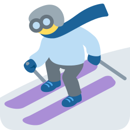
Дано:
s1=s2=900 м
t1=10 мин=600 с
t2=2 мин=120 с
Найти:
vср — ?
Решение:
s=900 м+900 м=1800 м
t=600 с+120 с=720 с
vср=720 с1800 м=2,5 см
Проверка: вверх 1,5 м/с, вниз 7,5 м/с — среднее между ними, но не 4,5.
Ответ: vср=2,5 м/с
Урок 1 · Задачи
Задача 6
6
★ Автомобиль первые 60 км пути ехал со скоростью 60 км/ч, а следующие 60 км — со скоростью 30 км/ч. Найдите среднюю скорость. Почему не 45 км/ч?
Подсказка: найдите время на каждом участке: t=vs
Дано:
s1=60 км, v1=60 км/ч
s2=60 км, v2=30 км/ч
Найти:
vср — ?
Решение:
t1=60 чкм60 км=1 ч, t2=30 чкм60 км=2 ч
vср=1+260+60=3 ч120 км=40 чкм
Медленно ехали дольше — средняя ближе к 30.
Ответ: vср=40 км/ч
Урок 1 · Проверим себя
Самостоятельная работа · 20 минут
- 5 заданий: перевод единиц, спидометр, график пути, график скорости, средняя скорость
- задачи — в формате «Дано | Решение», единицы при каждом числе
- проверьте: ответ с единицей измерения?
Оценка
12 баллов: «5» — от 11, «4» — от 8, «3» — от 5.
СР «Скорость, графики, средняя скорость», 2 варианта, 12 баллов. Решения и критерии — в файле «УЧИТЕЛЮ».
Урок 2 · Инерция и масса
Почему тело продолжает двигаться? Что нужно, чтобы изменить его скорость?
Урок 2 · Вопрос
Нужно ли толкать тело, чтобы оно двигалось?
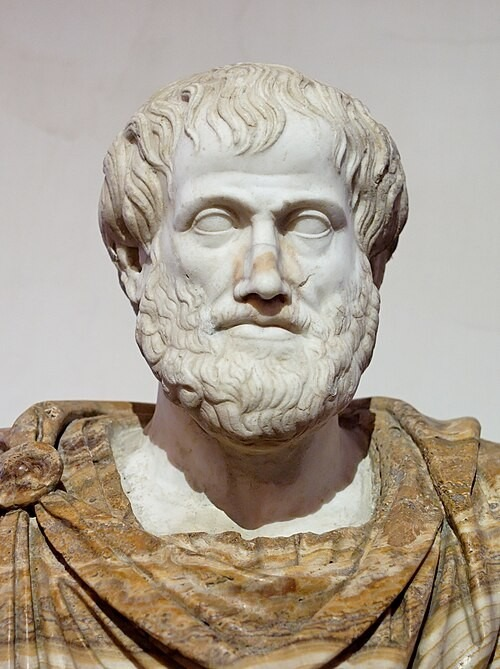
Аристотель, IV в. до н. э.
Аристотель
«Чтобы тело двигалось, его нужно всё время толкать. Нет толчка — тело остановится». С этим соглашались почти 2000 лет!Галилео Галилей
Тело останавливается не само, а потому что его тормозят другие тела: трение, воздух. Нет помех — тело движется без толчка, с той же скоростью.Кто прав?
Проверим опытами — как Галилей.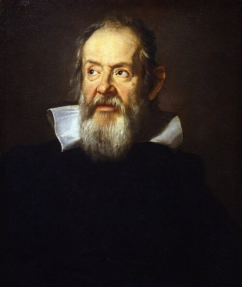
Галилей (1564–1642)
Спросить мнение класса до того, как открыть ответы. Аристотель (IV в. до н. э.): «всё движущееся движется благодаря другому» — без толчка тело останавливается. Галилей (1564–1642) доказал опытами: тело останавливается из-за трения и сопротивления воздуха.
Урок 2 · Опыт
Опыт 1: шарик катится по разным поверхностям
Нажимать «Толкнуть» на каждой поверхности: песок → ковёр → пол → лёд → без трения. Начальная скорость одна и та же (7 м/с). Вопрос: что будет, если трения нет совсем?
Урок 2 · Опыт Галилея
Опыт 2: две наклонные плоскости
Наклонная плоскость Галилея, Флоренция
Вывод Галилея
Чем меньше наклон, тем дальше катится шарик. На горизонтальной поверхности без трения он катился бы вечно.Галилей заметил: шарик, скатившись с одной плоскости, поднимается по другой почти на ту же высоту. Уменьшаем наклон правой плоскости — шарик катится всё дальше. При 0° (горизонталь) высоту набрать нельзя — шарик катился бы вечно. Фото: прибор Галилея в Музее Галилея во Флоренции.
Урок 2 · Главное
Явление инерции
Шайба на асфальте и на льду
ОпределениеИнерция — явление сохранения скорости тела, когда на него не действуют другие тела (или их действия скомпенсированы).
Закон инерции (Галилей)
Если на тело не действуют другие тела, оно покоится или движется равномерно и прямолинейно.От лат. inertia — «бездеятельность»: тело само свою скорость не меняет.
Анимация: одинаковые шайбы с одинаковой скоростью — на асфальте останавливается быстро, на льду катится долго. Закон инерции открыл Галилей; Ньютон сделал его первым законом механики (1687). Слово inertia (лат.) — бездеятельность, неподвижность.
Урок 2 · Физика вокруг
Инерция вокруг нас
Самолёт разгоняется
Пассажиров прижимает к спинкам кресел.
Автобус резко тормозит — пассажиры наклоняются вперёд.
Молоток насаживают, ударяя рукояткой о стол.
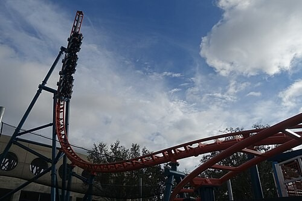
Американские горки
На поворотах нас «прижимает» к бортику: тело хочет двигаться прямо.
Почему нужны ремни безопасности?
При резком торможении автомобиль останавливается, а пассажир по инерции продолжает двигаться вперёд — ремень его удерживает.Автобус тормозит — ноги останавливаются вместе с полом, а тело по инерции продолжает двигаться вперёд. Самолёт разгоняется — пассажиров «вжимает» в кресло: тело стремится сохранить прежнюю скорость. Молоток насаживают ударом рукоятки о пол: рукоятка остановилась, а тяжёлая головка по инерции наезжает на неё.
Урок 2 · Фокус
Опыт-фокус: монета и открытка
монетаоткрытка
Что будет, если резко щёлкнуть по открытке?
Ответ
Открытка улетит, а монета упадёт в стакан: она покоилась и по инерции сохранила покой — открытка выскочила слишком быстро, чтобы «увезти» монету.Попробуйте дома
Стопка шашек: резким ударом линейки выбейте нижнюю — остальные останутся на месте.Можно показать вживую: открытка на стакане, сверху монета. Резкий щелчок по открытке — открытка улетает, монета падает в стакан. Монета покоилась и по инерции сохраняет покой; на неё почти не успели подействовать.
Урок 2 · Теория
Взаимодействие тел
ГлавноеСкорость тела меняется только тогда, когда на него действует другое тело.
ВзаимодействиеДействие тел всегда взаимно: если одно тело действует на другое, то и второе действует на первое. Это и называют взаимодействием.
🚣 Лодочник отталкивает вторую лодку — обе лодки расходятся
🎯 Выстрел: снаряд вперёд, пушка откатывается назад
⛸️ Фигуристы оттолкнулись — разъехались в разные стороны
Тележки отталкиваются друг от друга
Обе тележки пришли в движение, но с разными скоростями. Почему?
Анимация: тележки 1 кг и 2 кг отталкиваются через пружину — обе приходят в движение, лёгкая быстрее. Ключевая мысль: скорость тела меняется только при действии другого тела, и действие всегда взаимно.
Урок 2 · Опыт
Опыт 3: тележки разной массы
Выбирать разные массы. 1 и 2 кг: скорости 2:1. 1 и 3 кг: 3:1. Одинаковые — одинаковые скорости. Вывод: v1/v2 = m2/m1. Так можно сравнивать массы без весов.
Урок 2 · Главное
Инертность и масса
ИнертностьИнертность — свойство тела, от которого зависит изменение его скорости при взаимодействии. Чем инертнее тело, тем меньше изменяется его скорость (тем дольше её надо менять).
МассаМасса m — физическая величина, которая является мерой инертности тела. Единица массы в СИ — килограмм (кг).
m2m1=v1v2при взаимодействии скорости тел обратно пропорциональны их массам
Пример
Грузовику и легковому автомобилю нужно затормозить с одной скорости. Грузовик инертнее — ему нужен больший тормозной путь.Вопрос
Почему легко остановить катящийся мяч, но трудно — катящийся грузовик той же скорости?Урок 2 · Сравним
Инерция и инертность — не одно и то же!
| Инерция | Инертность | |
|---|---|---|
| Что это | явление | свойство тела |
| Суть | тело сохраняет скорость, если на него не действуют | тело по-разному меняет скорость при взаимодействии |
| Есть ли мера | нет | да — масса m, кг |
| Как сказать | «двигался по инерции» | «грузовик инертнее мяча» |
| Пример | санки катятся после толчка | тяжёлые санки труднее разогнать |
Запомни
Инерция — что происходит; инертность — какое тело.Урок 2 · Масса
Единицы массы и эталон килограмма
| Единица | В килограммах |
|---|---|
| 1 т (тонна) | 1000 кг |
| 1 ц (центнер) | 100 кг |
| 1 г (грамм) | 0,001 кг |
| 1 мг (миллиграмм) | 0,000001 кг |
Переводим
2,5 т =2500 кг 350 г =0,35 кг 1,2 кг =1200 г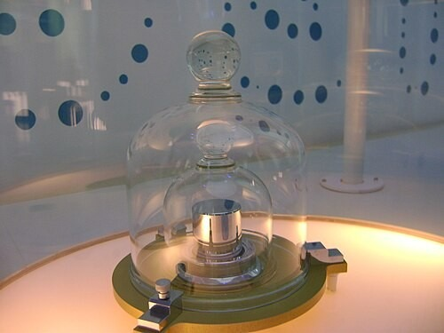
Копия международного эталона килограмма
История
1889 — эталон: цилиндр из платины и иридия (высота 39 мм), хранится под Парижем.2019 — килограмм определили через фундаментальную постоянную: теперь его воспроизводят в лабораториях всего мира.
Эталон 1889 года — цилиндр из сплава платины (90 %) и иридия (10 %), высота и диаметр по 39 мм; хранится в Севре под Парижем под тремя стеклянными колпаками. С 20 мая 2019 года килограмм определён через постоянную Планка — эталон больше не нужен, килограмм можно воспроизвести в любой лаборатории (весы Киббла).
Урок 2 · Масса
Как измерить массу?
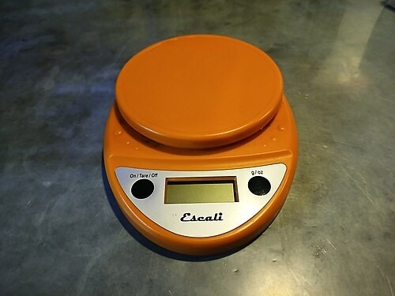
Кухонные весы
Весы
Взвешивание — самый частый способ: сравниваем массу тела с массой гирь или читаем показания электронных весов.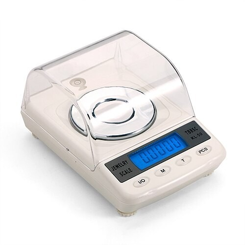
Ювелирные весы — до 0,001 г
Точность
Ювелирные весы чувствуют тысячную долю грамма, а весы для грузовиков — с точностью до 10–20 кг.m2m1=v1v2
По взаимодействию
Так «взвешивают» то, что на весы не положишь: атомы, частицы, даже планеты.Рычажные весы сравнивают массу тела с массой гирь (уравновешивание). Электронные весы измеряют силу давления и пересчитывают её в массу. Взаимодействие (тележки) — способ, которым массы сравнивают, например, у частиц в ускорителях.
Урок 2 · Физика вокруг
Массы в природе и технике
| Тело | Масса |
|---|---|
| Комар | ≈2 мг |
| Монета 1 рубль | ≈3 г |
| Яблоко | ≈0,2 кг |
| Семиклассник | ≈45 кг |
| Легковой автомобиль | ≈1,5 т |
| Синий кит | до 150 т |
| МКС | ≈420 т |
| Земля | ≈6⋅1024 кг |
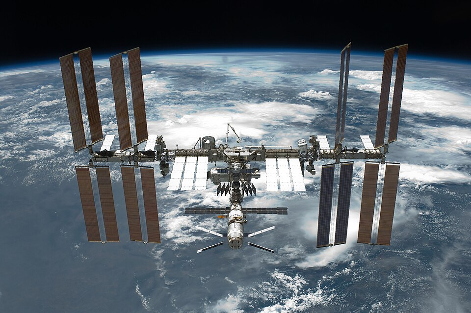
Международная космическая станция
Масса МКС — около 420 т. Синий кит — до 150 т, самое тяжёлое животное в истории Земли. Масса Земли — около 6·10^24 кг.
Урок 2 · Задачи
Задача 7
7
Почему нельзя перебегать дорогу перед близко идущим автомобилем?
Решение:
Автомобиль не может остановиться мгновенно: при торможении он ещё проезжает тормозной путь — по инерции.
Чем больше масса и скорость машины, тем длиннее этот путь.
Ответ: из-за инерции автомобиль не успеет остановиться.
Урок 2 · Задачи
Задача 8
8
Выразите в килограммах: 2,5 т; 350 г. Выразите в граммах: 1,2 кг.
Решение:
1 т=1000 кг: 2,5 т=2,5⋅1000 кг=2500 кг
1 г=0,001 кг: 350 г=350:1000 кг=0,35 кг
1 кг=1000 г: 1,2 кг=1200 г
Ответ: 2500 кг; 0,35 кг; 1200 г.
Урок 2 · Задачи
Задача 9
9
После пережигания нити левая тележка откатилась со скоростью 0,6 м/с, а правая — со скоростью 0,2 м/с. Масса левой тележки 1 кг. Найдите массу правой. Какая тележка инертнее?
Дано:
v1=0,6 м/с
v2=0,2 м/с
m1=1 кг
Найти:
m2 — ?
Решение:
m2m1=v1v2 ⇒ m2=v2m1v1
m2=0,2 м/с1 кг⋅0,6 м/с=3 кг
Правая тележка получила меньшую скорость — она инертнее.
Ответ: m2=3 кг, правая инертнее.
Урок 2 · Задачи
Задача 10
10
Мальчик массой 40 кг, стоя на коньках, оттолкнул от себя товарища массой 50 кг и откатился со скоростью 2,5 м/с. С какой скоростью откатился товарищ?
Дано:
m1=40 кг
v1=2,5 м/с
m2=50 кг
Найти:
v2 — ?
Решение:
m2m1=v1v2 ⇒ v2=m2m1v1
v2=50 кг40 кг⋅2,5 см=2 см
Товарищ тяжелее — его скорость меньше.
Ответ: v2=2 м/с
Урок 2 · Задачи
Задача 11
11
★ Из неподвижной пушки массой 500 кг (без снаряда) вылетел снаряд массой 5 кг со скоростью 400 м/с. С какой скоростью откатилась пушка?
Дано:
m1=500 кг
m2=5 кг
v2=400 м/с
Найти:
v1 — ?
Решение:
m2m1=v1v2 ⇒ v1=m1m2v2
v1=500 кг5 кг⋅400 см=4 см
Это отдача: у пушек ставят тормоза отката.
Ответ: v1=4 м/с
Заглянем вперёд: плотность
Одинаковые по размеру тела могут иметь очень разную массу. Почему?
Задел на следующий урок (§ 23). Если останется время — обсудить устно и показать таблицу.
Вперёд · Плотность
Кубики одного размера — разная масса
Анимация: кубики объёмом 1 см³
ПлотностьПлотность ρ («ро») показывает, какова масса единицы объёма вещества.
ρ=Vmединицы: м3кг и см3г
Подумайте
Что тяжелее: килограмм ваты или килограмм железа?Анимация: кубики объёмом 1 см³ из сосны, алюминия и железа на одинаковых весах. Масса 1 см³ вещества и есть его плотность в г/см³. Подробно — на следующем уроке.
Вперёд · Плотность
Плотность некоторых веществ
| Вещество | ρ, кг/м³ | ρ, г/см³ |
|---|---|---|
| Золото | 19300 | 19,3 |
| Свинец | 11300 | 11,3 |
| Железо | 7800 | 7,8 |
| Алюминий | 2700 | 2,7 |
| Вода | 1000 | 1,0 |
| Лёд | 900 | 0,9 |
| Сосна (сухая) | 400 | 0,4 |
| Воздух | 1,29 | 0,00129 |
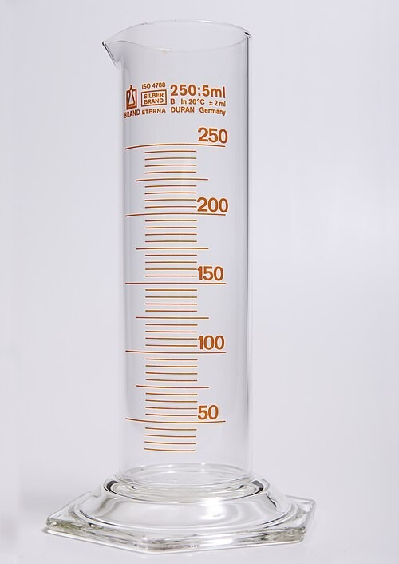
Мензурка: ей измеряют объём
Почему лёд плавает?
Плотность льда меньше, чем воды. Айсберг почти на 90% скрыт под водой.Урок 2 · Тест
Тест: проверим себя
1
Средняя скорость — это…
А) среднее арифметическое скоростейБ) весь путь, делённый на всё времяВ) самая большая скорость
2
Шайба на льду долго катится, потому что…
А) её толкает лёдБ) трение малоВ) у неё большая масса
3
Инерция — это…
А) свойство телаБ) явление сохранения скорости телаВ) единица массы
4
Мерой инертности тела является…
А) скоростьБ) массаВ) путь
5
При взаимодействии двух тележек большую скорость получит…
А) более лёгкаяБ) более тяжёлаяВ) одинаковую
6
0,4 т — это…
А) 40 кгБ) 400 кгВ) 4000 кг
Урок 2 · Ответы
Ответы к тесту
1
Средняя скорость — это…
А) среднее арифметическое скоростейБ) весь путь, делённый на всё времяВ) самая большая скорость
2
Шайба на льду долго катится, потому что…
А) её толкает лёдБ) трение малоВ) у неё большая масса
3
Инерция — это…
А) свойство телаБ) явление сохранения скорости телаВ) единица массы
4
Мерой инертности тела является…
А) скоростьБ) массаВ) путь
5
При взаимодействии двух тележек большую скорость получит…
А) более лёгкаяБ) более тяжёлаяВ) одинаковую
6
0,4 т — это…
А) 40 кгБ) 400 кгВ) 4000 кг
Дома
Домашнее задание к 14.11
Прочитать§ 19 «Инерция», § 20 «Взаимодействие тел», § 21 «Масса тела. Единицы массы»; вперёд — § 22 «Измерение массы тела на весах».
РешитьЛисток «ДЗ к 14.11 — Средняя скорость. Инерция. Масса»: № 1–8, № 9★ — по желанию.
Как оформлять
Расчётные задачи — в тетради: «Дано | Решение», «Найти» под «Дано». Единицы — при каждом числе.Все материалы
Презентация, листок и СР — на странице класса «Как здорово! 7 класс».Источники
Фотографии
• Наклонная плоскость Галилея (Музей Галилея, Флоренция) — Zde, CC BY-SA 4.0, commons: File:Piano_inclinato,_Museo_Galileo,_Florence,_Inv._104,_224108.jpg
• Спидометр — Mimiliz, CC BY-SA 3.0, commons: File:Car_dashboard.jpg
• Механический секундомер — R. Henrik Nilsson, CC BY 4.0, commons: File:Ca_1970_mechanical_stopwatch_by_Herwins_Switzerland.jpg
• Park Pobedy Arbatsko-Pokrovskaya Line Moscow Metro escalator.jpg — Denghu at English Wikipedia, CC BY 3.0, commons: File:Park_Pobedy_Arbatsko-Pokrovskaya_Line_Moscow_Metro_escalator.jpg
• Старт гонки «Формулы-1» — madagascarica from Verneuil Grand, France, CC BY 2.0, commons: File:1989_Belgian_GP_race_start_04.jpg
• Аристотель. Римская копия греческого бюста — After Lysippos, Public domain, commons: File:Aristotle_Altemps_Inv8575.jpg
• Ю. Сустерманс. Портрет Галилея — Justus Sustermans, Public domain, commons: File:Justus_Sustermans_-_Portrait_of_Galileo_Galilei_(Uffizi).jpg
• Взлёт самолёта — Alf van Beem, Public domain, commons: File:D-AIPZ_Lufthansa_Airbus_A320-211_takeoff_from_Schiphol_runway_36C_pic2.JPG
• Американские горки с катапультным стартом — Jeremy Thompson, CC BY 2.0, commons: File:Ice_Breaker_(SeaWorld_Orlando)_3.jpg
• Копия международного прототипа килограмма — Japs 88, CC BY-SA 3.0, commons: File:Prototype_kilogram_replica.JPG
• Кухонные весы — Ser Amantio di Nicolao, CC BY-SA 4.0, commons: File:Escali_digital_kitchen_scale.jpg
• Ювелирные весы — TBBSC, CC BY-SA 4.0, commons: File:TBBSC_Jewelry_scales.jpg
• STS-134 International Space Station after undocking.jpg — NASA, Public domain
• Мензурка — Lilly_M, CC BY-SA 3.0, commons: File:Glass_graduated_cylinder-250ml_1.jpg
• Иконки — Twemoji (CC BY 4.0). Анимации и интерактивы — собственные.